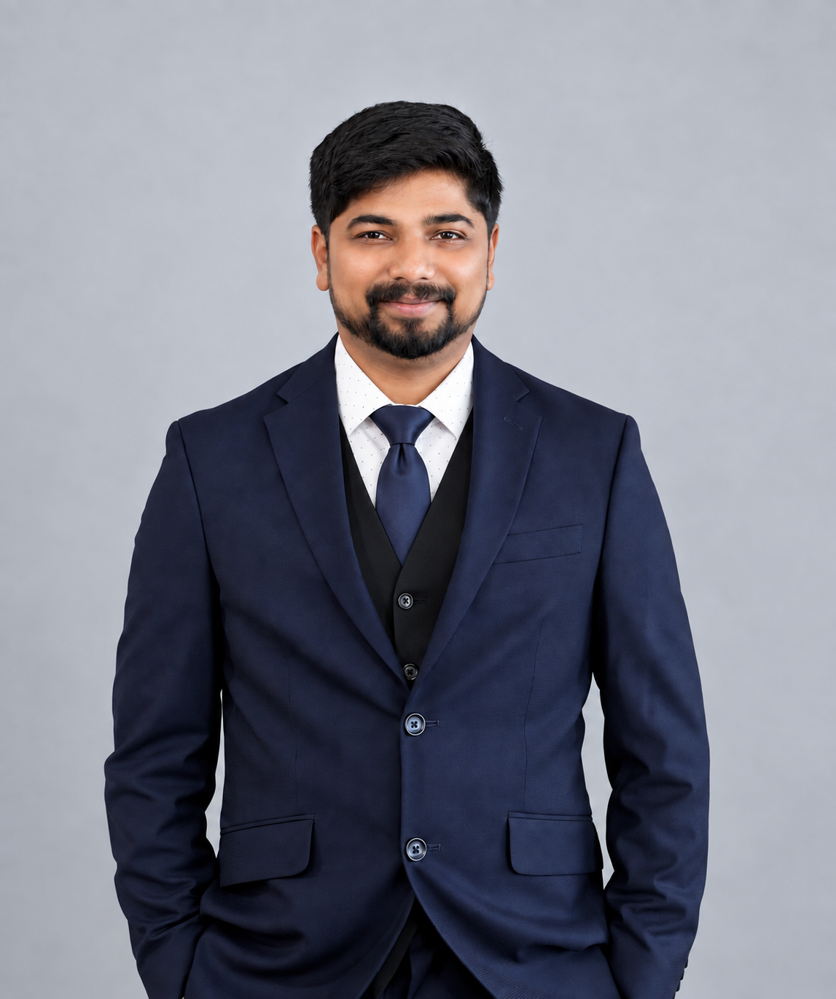

AP Invoice Risk Classification
A supervised Python model using XGBoost and Scikit-learn to classify AP invoices by financial risk level. My CV reports 89%+ classification accuracy.
Visit Kaggle profile ↗Oracle ERP & AI-enabled automation consultant
I connect finance processes, enterprise systems, and practical automation. My work spans Oracle Fusion, PeopleSoft FSCM, and SAP, from Procure-to-Pay and General Ledger through integrations, analytics, and applied AI.

A mix of applied machine learning, public portfolio work, and ERP transformation experience.
A supervised Python model using XGBoost and Scikit-learn to classify AP invoices by financial risk level. My CV reports 89%+ classification accuracy.
Visit Kaggle profile ↗A synthetic invoice workflow with validation, quarantine, email redaction, vendor metrics, and human-reviewed issue triage. Includes a Kaggle notebook and optional n8n schedule.
Approval routing and invoice processing across Oracle Fusion, PeopleSoft, and Basware.
REST/SOAP, Oracle Integration Cloud, Integration Broker, and SAP IDoc interfaces.
OTBI, BI Publisher, SQR, Power BI, and predictive KPI reporting for finance stakeholders.
State of Texas, Employees Retirement System · Nov 2024 – Aug 2026
Bright Mind Enrichment · Dec 2023 – Sep 2024
Inno Minds Software · Jun 2020 – Jun 2021
House To Factory Total Solutions · Aug 2019 – Mar 2020
From requirements and configuration through data migration, reconciliation, testing, cutover, and production support.
OCI AI Foundations · Oracle Fusion Cloud HCM Process Essentials · OCI Foundations Associate · Six Sigma Green Belt
M.S. in Technology Management, AI Concentration — in progress, Avila University
M.S. in Industrial Engineering — Wichita State University